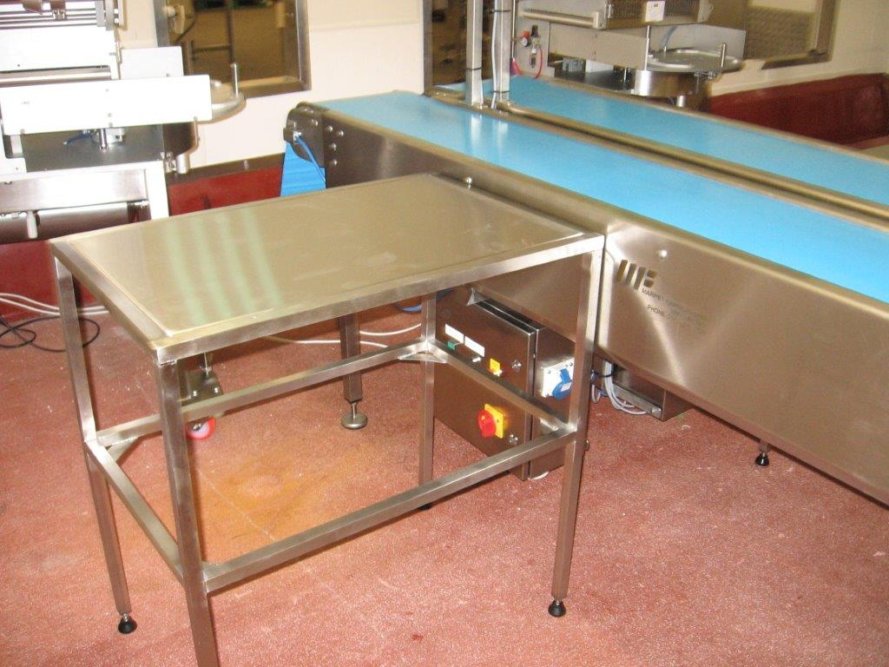

Sheet metal fabricators, Glasgow
Fabricated into place.
Marpet design, manufacture and install stainless steel, mild steel and aluminium fabrication, in the workshop or on site.
Illustrative 3D model based on Marpet belt conveyor photographs. Not a specific delivered machine.
About Marpet
Stainless steel work for production floors
Marpet Fabrications has built a reputation for quality across sheet metal, engineering and fabrication, with a client base across Scotland and the North of England.
The work is made by skilled, time served tradesmen, either in the fabrication workshop or on site at client premises.
To confirm Founding date. The existing site says "early 80's", the logo says "1997 Limited".
About Marpet


Completed work
Featured work
All work
Who we work for
Customers
As listed on the existing Marpet website. Confirm each name is still approved for publication
- Warburtons Bread Bakery
- Diageo Whisky Distillery
- Barrs Soft Drinks
- Lightbody Celebration Cakes
- Lees of Scotland
- Aulds Delicious Desserts
- Pinneys of Annan
- Walter Black Foods
- Scotbeef
- Vion (formerly Grampian)
Fabrication and machining
Need it machined as well?
JNR Engineering, Hamilton
CNC milling, CNC turning and water jet profiling. JNR is a separate company with its own quotes and its own contact details.
To confirm The exact relationship wording. JNR's own site lists Marpet under "Family". Nothing about ownership or a group is stated here until it is approved.
Current work
Connect with Marpet on LinkedIn
Latest from the workshopPanel
A real Marpet post: photograph, one line of text, date and a link to the post on LinkedIn. Added by hand in the content file. No likes or follower counts are shown.
A real Marpet post: photograph, one line of text, date and a link to the post on LinkedIn. Added by hand in the content file. No likes or follower counts are shown.
A real Marpet post: photograph, one line of text, date and a link to the post on LinkedIn. Added by hand in the content file. No likes or follower counts are shown.
Have a drawing or a line to fit out?
Tell us what you need made and where it is going. Marpet will come back to you.